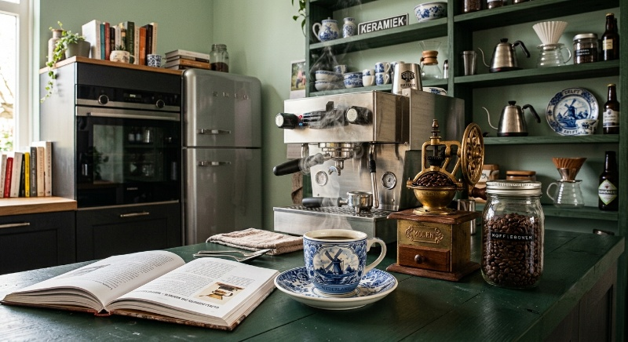

Di sini, buku bukan sebagai arsip yang sudah selesai — melainkan menjadi tempat pertanyaan yang terus menerus disampaikan: dari sejarah peradaban dan kosmologi spekulatif, mesin yang mulai berpikir, ungkapan apresiasi terhadap sebuah karya seni, tubuh yang belajar mengatur napasnya sendiri, hingga diri yang tak pernah berhenti untuk disusun ulang.
Nyalakan lampu baca, ambil satu buku dari rak, dan duduklah sejenak.
Koleksi ini menghimpun jejak pikiran dan renungan pribadi yang sederhana — diungkapkan melalui kecerdasan buatan, diperkaya oleh logika prediktif neuralnya yang disuling dari luasnya pengalaman manusia.
← geser untuk melihat jilid lainnya →
“Perpustakaan bukan tempat menyimpan jawaban, ia sesungguhnya adalah tempat menyimpan pertanyaan. Semua pertanyaan yang pantas untuk selalu ditulis ulang.”
Ruang Baca adalah ruang kerja dan arsip pribadi — tempat buku, esai, dan alat berpikir yang disimpan sambil terus ditulis ulang. Tidak ada yang benar-benar selesai di sini; setiap jilid adalah edisi yang selalu berubah, ditambah, dikurangi dan diperbaiki.
— Sangoeroep